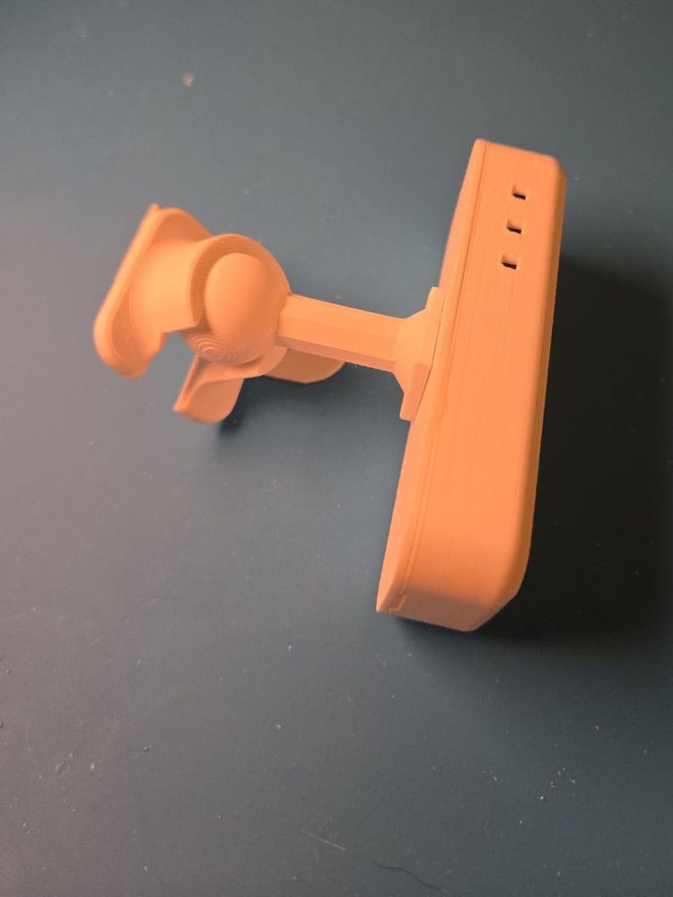
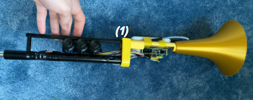

Projects
StoveDetector

A small sensor that notices when a stove has been left on and unattended, and sounds an alert
before it becomes a fire. Started as a personal safety fix (formerly "KitchenEye"); now a
hardware startup heading into its first pilot homes. Custom carrier board, Wi-Fi alerts,
and a pre-pilot FCC compliance process I'm running myself.
stovedetector.com
Status: founder, pre-pilot, 2026
The Louis: MIDI Trumpet

An affordable MIDI trumpet built to look, feel and sound like the real thing, so remote-learning
students could practice without the cost or noise of an actual trumpet. Real valve springs and
mouthpiece, a 3D-printed body, an I2S mic reading the mouthpiece buzz, valve sensors, and a
Raspberry Pi + Teensy for signal processing, all for under $150 in parts.
Senior capstone at Brown (ENGN 1001), April 2021, with Riad Hallal, Nathan Plano and Albin Wells.
Read the full write-up (PDF, 32 pages)
Status: completed, 2021
Future You: Authenticity Detector
Extends the MIT Media Lab's "Future You" work: records your face during conversations with your
future self and flags moments of discomfort or disengagement, to help separate what you actually
feel from the answer you've rehearsed.
Status: in development
Video Journal
A short nightly video journal: talk to the camera for a few minutes, with no editing and no
correcting yourself, and watch your own story and mood take shape over weeks.
Status: in development
Yale Shuttle Tracker
A live map, stop-by-stop arrival times and a trip planner for Yale's Downtowner shuttles.
It polls the shuttle GPS feed every 5 seconds and builds its own history of arrivals, dwell
times and travel times between stops. Predictions are calibrated from what the buses actually
did on that stretch of route at that hour and day of the week, not from the published
timetable. The planner routes between any two points, including the walking legs.
A single Node service with a React front end and SQLite, plus automated map and data checks
that catch bad predictions before riders see them.
yale-shuttle.fly.dev
Status: live, 2026
Future You: Attune
A sensing plugin for MIT Media Lab's Future You, where people talk with an AI simulation
of their older self. Future You builds that persona only from what you type; Attune also watches
how you answer: face (MediaPipe blendshapes), voice (pitch, loudness, pauses) and heart
rate from a Bluetooth strap. The output is an affect profile and a persona prompt, so the
future-self conversation knows which topics made you tense, energised, hesitant or calm.
Signals, not verdicts: every feature is measured against your own 45-second resting baseline,
it never outputs emotion labels, and your self-report overrides the sensors when they disagree.
All sensing runs locally in the browser.
Status: in development
Amplify the Good
Short-form sermon clips for social media, from United Church on the Green and the Young Prophets
Collective in New Haven. A pipeline pulls sermon captions, picks out quotable moments and cuts
preview clips; each morning I approve or reject five from my phone, and the approved ones get
captioned and posted.
Status: running
Recursive Find
Write-up coming.
Drone Project
Write-up and photos coming.